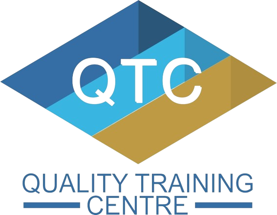

JOB EXPERIENCES
- SHOPEE WAREHOUSE (2019)
- Packing and wrapping all of the customers' ordered items
- Arranging and organizing ordered items according to their category
- Picking and delivering packed items to the courier

- QTC MANAGEMENT CONSULTANT SDN BHD (2021 - 2022)
- Coordinate and schedule meetings (online & offline) with other consultants
- Editing and correcting notes modules in terms of graphics, spelling and grammar
- Performing basic bookkeeping tasks such as issuing invoices, payment order and receipt
- In charge of key in all of the consultant attendees’ details in excel
- Admin tasks such as bookings, check-ins, responding to email
- Responsible in managing business social media and editing business video contents
- Preparing and distributing survey during and after consultancy seminar